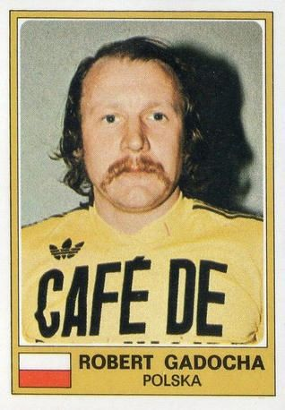

Asistencias en los mundiales
-
Más asistencias:
Pelé con 10 (1958-1970).
-
Más asistencias en un solo torneo:
Raymond Kopa con 9, en 1958.
-
Más asistencias en un solo partido:
Robert Gadocha con 4, contra Haití en 1974.
 -
Más asistencias en fase eliminatoria:
Pelé y Lionel Messi con 6 cada uno.
-
Más asistencias en finales:
Pelé con 3, 1 contra Suecia(1958) y 2 contra Italia(1970).
-
Jugador con asistencias en 5 mundiales distintos:
Lionel Messi (2006, 2010, 2014, 2018 y 2022).